Warman Design
and Build Competition
An autonomous robot built to collect six “seed pods” from a competition track
and drop them into an incinerator within 120 seconds.
41059 Mechanical Design Fundamentals Studio 1, UTS.
- Challenge
- Collect six seed pods and deliver them to an incinerator within 120 seconds.
- My contribution
- Led the team, designed the chassis, built the SolidWorks assembly and wrote the Arduino control code.
- Result
- The chassis met the tested requirements. The integrated robot underperformed on competition day.
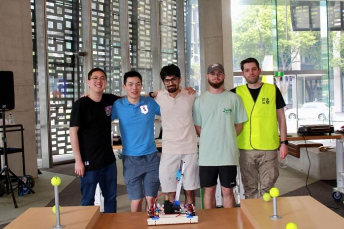
Overview
In the Weir Warman Design & Build Competition, student engineering teams from universities around the world design and build a machine to complete a set task as fast and reliably as possible. Each year has a new brief. The 37th competition was themed Project FAMINE: invasive seed pods on the fictional planet Gondwana threaten local farmland, and the machine must collect them and drop them into an incinerator before they burst and spread.
The seed pods are six tennis balls. Four sit on M12 nuts on the two raised platforms, and two sit on top of “trees”, galvanised steel pipes 150 mm and 300 mm tall. The robot has 120 seconds to collect them all and drop them through a 120 mm hole in the middle of the track. It must also start inside a 400 × 400 × 400 mm envelope and weigh less than 6 kg.
The course ran the project as a series of design artefacts: modelling the track, designing and testing the chassis, developing a drive and control system, and finally competing on demonstration day.
 The final robot on the competition track.
The final robot on the competition track.
How the robot works
The robot has three subsystems:
- Chassis. A laser-cut plywood frame that DC motors drive up and down the track. It carries the batteries, the Arduino and the other two subsystems.
- Worm gear. Mounted near the chassis’ centre of gravity. It rotates the arm assembly to line up with each ball.
- Twin-arm extension. Extends outward in two stages until it sits under a ball. It then tilts slowly so the ball rolls down the rail into the chassis, which holds it until the robot drops it into the incinerator.
Explore the robot in 3D
Explore the full CAD assembly. Drag to rotate and scroll or pinch to zoom.
Load the model to rotate and zoom.
My Role
I led the team. I designed the chassis, built the full SolidWorks assembly that brought every subsystem together, and wrote the Arduino control code. I also modelled the competition track and produced its engineering drawings.
Halfway through the course, half of our original team left. As team leader, I took on much of the remaining design, CAD and programming work so we could still get a robot onto the track. It was overwhelming at first, but it taught me more about leadership, prioritising and staying adaptable than any other part of the project.
| Team member | Role | Responsibilities |
|---|---|---|
| Madhav Diwan | Team Lead & Mechanical Design | Chassis design, SolidWorks assembly, coding |
| Jaydn Tran | Electrical Design | Arm extension |
| Yu Chia Chang | Mechanical Design | Arm gearbox |
| Toon Janssen | Mechanical Design | Alternative CAD design |
Track Design
Before designing the robot, I modelled the competition track in SolidWorks to the official specification. That gave the team an accurate digital environment for checking reach, clearances and arm angles. I also produced a general assembly drawing and an exploded-view drawing with a full bill of materials.
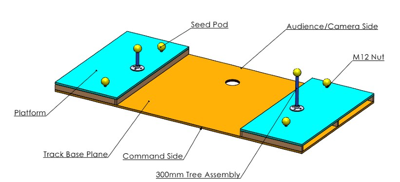
Track layout: the base plane, the two raised platforms, the seed pods, the tree assemblies and the incinerator hole.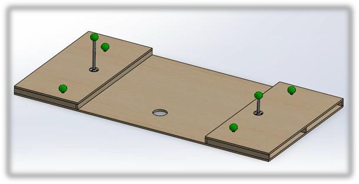
Isometric CAD model.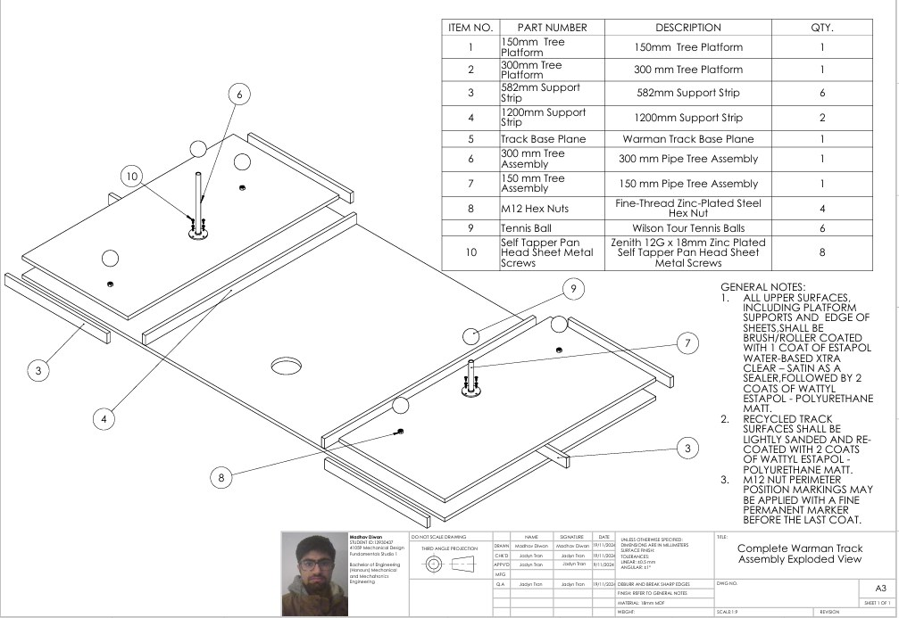
Exploded view with bill of materials.The track is a 2400 mm long, 1200 mm wide base with a 600 mm raised platform at each end. The platforms are 18 mm MDF on screwed support strips: six 582 mm strips and two 1200 mm strips. Four M12 hex nuts mark the ground-level ball positions. The two trees are 20 mm pipes on flanges, fixed with self-tapping screws on a 59 mm pitch circle. The drawing notes specify the finish: every upper surface gets a water-based Estapol sealer and then two coats of matt polyurethane, so the track survives repeated runs.
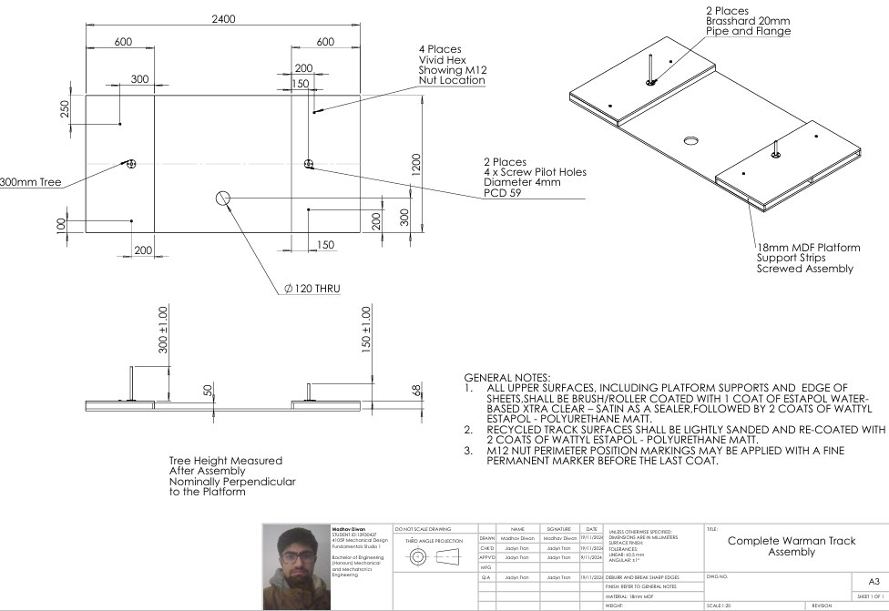
General assembly drawing with the key dimensions and tolerances.The Engineers Australia Code of Ethics asks engineers to promote sustainability. With that in mind, I also looked at how the track could be built from recycled plastic or composite panels, and how biodegradable or recyclable parts would keep it from becoming long-term waste once the competition is over.
Chassis Design
Concept selection
I broke the chassis into two subfunctions, movement and structure, and compared options for each in a morphological table. For movement I looked at mecanum, omni, ball-caster, tank-track and standard wheels. For structure I compared wood, aluminium, PVC, steel, acrylic, cardboard and PLA. Each option got a short pros and cons summary.
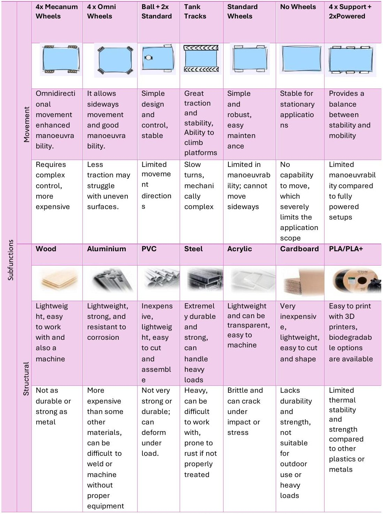
Morphological table of drive layouts and frame materials, with pros and cons.I combined five promising options into full concepts and scored each against weighted criteria:
| Criteria | Weight | A: Wood, 4 support + 2 powered | B: Aluminium, 4 support + 2 powered | C: PLA + acrylic, 4 mecanum | D: Acrylic, ball + 2 standard | E: Aluminium, 4 omni |
|---|---|---|---|---|---|---|
| Weight | 25% | 5 | 3 | 2 | 3 | 2 |
| Affordability | 20% | 5 | 3 | 2 | 3 | 2 |
| Ease of assembly | 15% | 4 | 3 | 4 | 3 | 3 |
| Durability | 20% | 2 | 4 | 2 | 2 | 4 |
| Modularity | 10% | 3 | 4 | 5 | 3 | 4 |
| Compatibility | 10% | 3 | 4 | 3 | 3 | 4 |
| Total | 100% | 77 | 68 | 54 | 56 | 59 |
The wooden frame with four support wheels and two powered wheels won, mainly because it was light, cheap and easy to laser-cut and rework. Aluminium was more durable but heavier and harder to assemble. Mecanum and omni wheels gave better manoeuvrability, but at a higher cost, weight and control complexity than a first prototype needed.
Prototyping: low to high fidelity
The first concept was based on a dolly: a rectangular tab-and-slot frame joined with T-connectors, with fixed caster wheels at the corners and two driven wheels moving it back and forth. I then moved towards a drop-centre layout, inspired by a 6-wheel competition robot drive base. Lowering the middle wheels slightly lets the robot pivot on them, which makes turning much easier than with a flat six-wheel base.
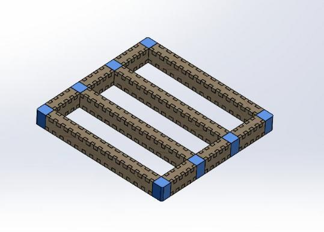
Initial dolly-style concept.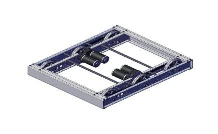
Inspiration: a drop-centre competition drive base.Low fidelity. No 6 mm plywood was available, so I laser-cut the SolidWorks parts from two 3 mm cardboard sheets and taped them together for the full 6 mm thickness. Skewers taped along the sides, or slid between the layers, stopped the cardboard bending, and the frame was hot-glued together. This cheap, quick model confirmed the overall size and layout and showed where the pickup arm would mount.
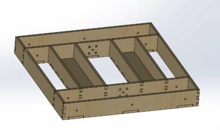
Low-fidelity CAD.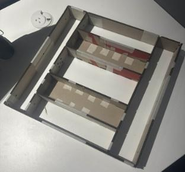
Laser-cut cardboard prototype.Medium fidelity. The second version was laser-cut plywood. It added custom 3D-printed caster wheels running on M8 bolt axles, plus extra member holders to strengthen the corners and support the wheels. This was the first version that could carry the real subsystems.
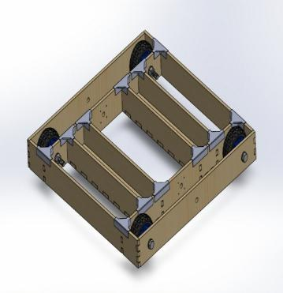
Medium-fidelity CAD.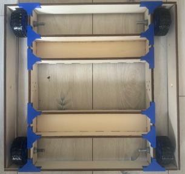
Assembled plywood frame.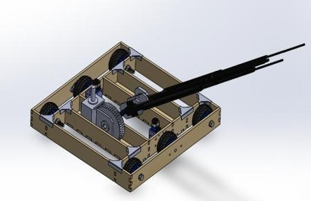
With the arm assembly integrated.High fidelity. The final chassis is slightly smaller, so it fits easily inside the 400 mm starting cube. It has more room for electronics and wiring, dedicated mounts for the DC motors, and holes in the inner members for the worm gear subsystem.
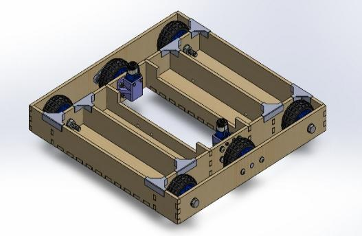
Final CAD with motor mounts.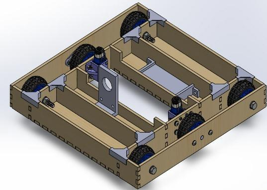
Final CAD with the worm gear mount.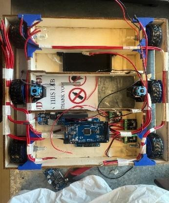
Built and wired.Engineering analysis
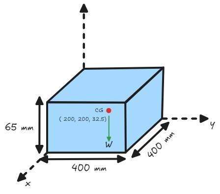
Centre of gravity model.Centre of gravity. I modelled the chassis as a uniform 400 × 400 × 65 mm box, which puts its centre of gravity at its geometric centre, (200, 200, 32.5) mm. Heavy parts such as the worm gear were mounted as close to that point as possible. That keeps the robot from tipping when the arm swings out with a ball on the end.
Drive torque. I checked the motors against a worst case: chassis plus payload of 5.5 kg on six wheels, two of them driven.
| Total mass | 5.5 kg |
| Wheels / driven wheels | 6 / 2 |
| Wheel radius | 0.0325 m |
| Target acceleration | 0.3 m/s² |
| Rolling resistance coefficient | 0.02 |
| Rolling resistance (all wheels) | 1.08 N |
| Acceleration force | 1.65 N |
| Total drive force | 2.73 N |
| Torque per driven wheel | 0.044 N·m |
The TT DC motors have a 1.0 N·m stall torque, more than 20 times the requirement. Testing on demonstration day confirmed this, with the chassis moving loads of up to 5.5 kg.
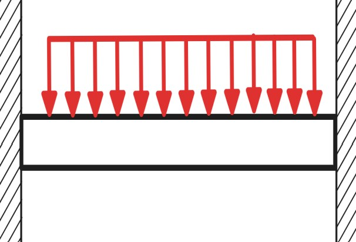
Fixed-fixed beam model of a chassis member.Beam deflection. I modelled one 50 × 6 mm plywood chassis member as a 150 mm fixed-fixed beam under a uniformly distributed load. Its second moment of area is I = bh³/12 = 9 × 10−10 m⁴, and the predicted maximum deflection is about 0.11 mm. The thin plywood members are easily stiff enough for the loads on the robot.
Testing and validation
I tested the finished chassis against the competition and design requirements:
- Weight. I weighed it on a scale to confirm it was well under the 6 kg limit.
- Size. I placed it in a 400 × 400 × 400 mm acrylic enclosure with all subsystems mounted, to check it fit the starting envelope.
- Fit and compatibility. I mounted the major subsystems at their specified points and ran the chassis on the real track.
- Load capacity. It carried an 8 kg payload of two 4 kg dumbbells and stayed stable, well beyond what the competition requires.
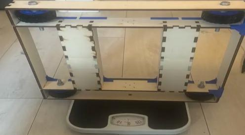
Weight check.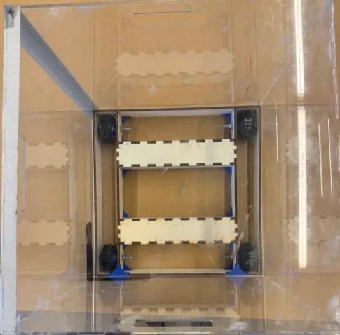
Fit inside the 400 mm starting envelope.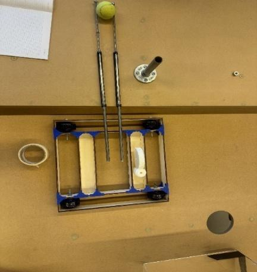
Checking arm reach on the track.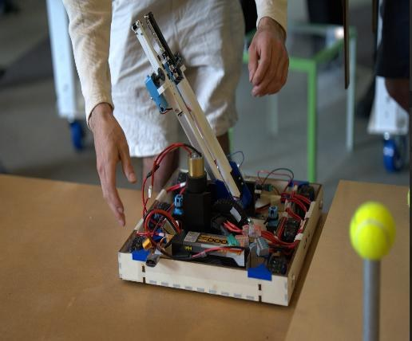
The full robot being set up for a run.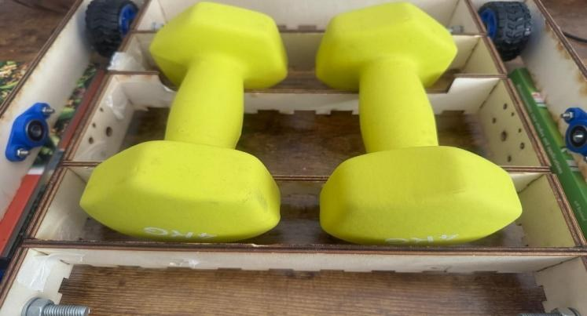
Load test with an 8 kg payload.Mecanum Wheel Control
Alongside the competition chassis, I built and programmed a four-wheel mecanum drive base. Mecanum wheels are widely used where robots need to move precisely in tight spaces, such as warehouses and factories. Each mecanum wheel has rollers at 45° to its axis, so it pushes the robot both along its direction of travel and sideways at the same time. Changing the direction of each wheel lets the robot drive forward, slide sideways, move diagonally or spin on the spot.
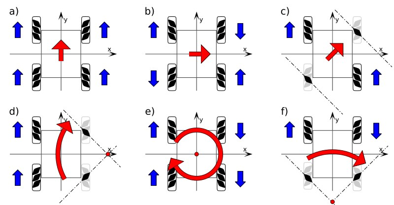
How wheel directions combine into forward, sideways, diagonal and rotational motion.| Movement | Front left | Front right | Rear left | Rear right |
|---|---|---|---|---|
| Forward | ↑ | ↑ | ↑ | ↑ |
| Reverse | ↓ | ↓ | ↓ | ↓ |
| Slide right | ↑ | ↓ | ↓ | ↑ |
| Slide left | ↓ | ↑ | ↑ | ↓ |
| Rotate clockwise | ↑ | ↑ | ↓ | ↓ |
| Rotate anticlockwise | ↓ | ↓ | ↑ | ↑ |
Hardware
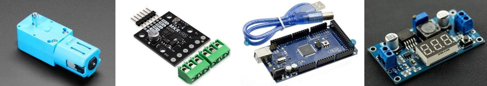
Left to right: TT DC motor, Makerverse motor driver, Arduino Mega and DC-DC buck converter.- Motors. Four Arduino TT DC motors driving 80 mm mecanum wheels. They cover the torque requirement, run at 120–300 RPM and draw 3–5 W, enough for the target speed of 1 m/s.
- Motor drivers. Two Makerverse drivers, each running two motors. They accept 3–16 V and handle 1.6 A continuously, comfortably above the motor’s 1 A stall current at 6 V. They also have adjustable current limiting, reverse-polarity protection and thermal overload protection.
- Power. A 9 V battery feeds a main switch and then a buck converter that steps it down to 6 V. The Arduino Mega and both drivers are wired in parallel from that 6 V rail.
- Torque check. With 5.5 kg spread across four driven 40 mm-radius wheels, each wheel needs about 0.027 N·m.
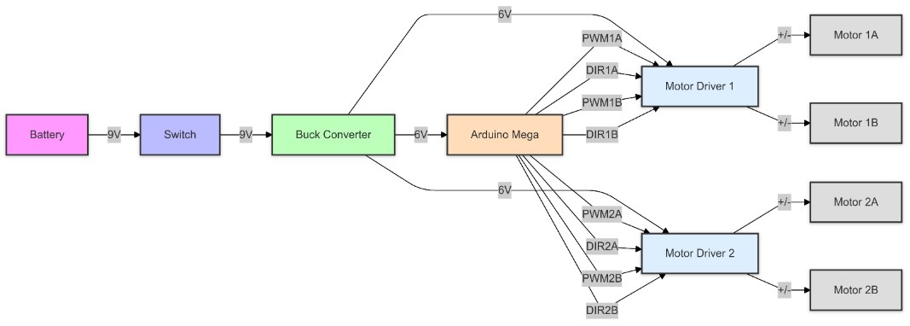
Block circuit diagram: battery, switch, buck converter, Arduino Mega, two motor drivers and four motors.Control software
The Arduino sends each motor a PWM signal for speed and a direction signal. A single controlMotor(directionPin, pwmPin, forward, speed) function handles one wheel, and the movement commands build on it: forward, backward, strafe left, strafe right and stop. The robot can be driven over serial with the single-character commands F, B, L, R and S.
To test the drive base, I wrote an automated routine. It drives forward, backward, strafes left and strafes right for two seconds each, stops for half a second between moves, and repeats the sequence until 30 seconds have passed.
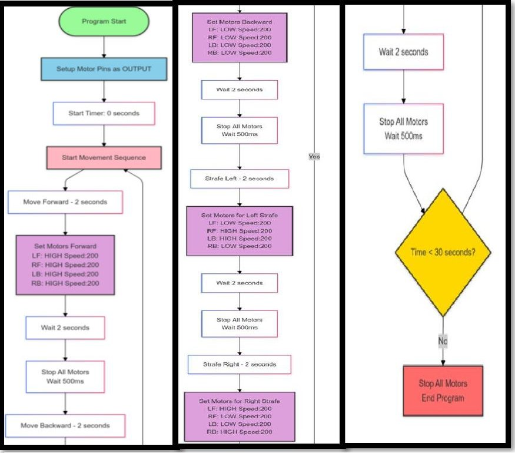
Test routine flowchart.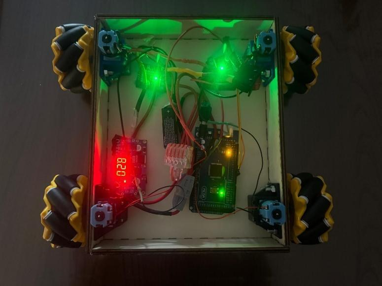
The mecanum test rig, powered up.Results
| Run | Time (s) | Score | Comments |
|---|---|---|---|
| 1 | 26 | 47 | Robot started |
| 2 | 16 | 52 | Robot started and knocked over a ball |
| Total | 42 | 99 |
On competition day the robot started both runs but didn’t collect balls as planned. Looking back, a chain of hardware and software problems caused it:
- Linear actuator burnout. The linear actuators burned out just before testing, so we had to start the robot from the side of the course instead of the centre. That changed every arm angle the code relied on and made the arm much less accurate.
- Gearbox detachment. The arm gearbox came loose from the chassis during a run, which hurt mobility and stopped the robot collecting more balls.
- Microcontroller issues. We had trouble uploading sketches to the Arduino Mega.
- Code that couldn’t adapt. With little time and limited programming experience in the team, we couldn’t fully rework the control code for the new start position. The robot under-turned on the first run and over-turned on the second. With no error handling, it couldn’t compensate for the changed setup.
What I Learned
This project took me through the whole mechanical design process: concept selection with morphological tables and weighted scoring, CAD and engineering drawings in SolidWorks, rapid prototyping with laser cutting and 3D printing, hand calculations, and testing against requirements.
The competition result taught me the most. The chassis met every requirement I tested it against, but the robot as a whole still underperformed. A good mechanical design isn’t enough without reliable parts, robust code and time left for integration testing. On my next project I would:
- Choose more durable actuators and test them under load much earlier.
- Write control code that can handle a changed starting position or a mechanical fault.
- Build up the team’s programming skills earlier in the project.
- Plan for problems by leaving real slack in the schedule for integration and testing.
Leading a team that lost half its members partway through was the hardest part of the project, and the part I learned the most from.